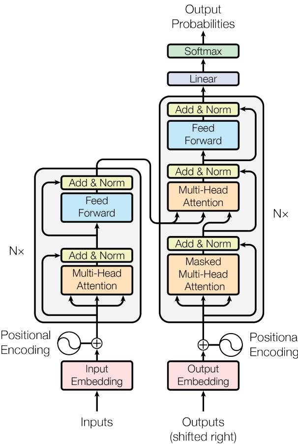

4.1 整体架构：编码器与解码器搭起的流水线
本页范围：第 4 章第 1 节 | 整理时间：2026-09-29
本节是第 4 章的开篇。前三章备好了原料：文本切成 token，token 变成向量，向量带上位置信息。从这一节开始，问题变成「这些向量要送进一台什么样的机器」。原论文（Vaswani et al., 2017）给出的答案是一条两塔流水线：一座塔负责读懂，一座塔负责写出。本节先把这台机器的整体结构立起来，内部零件留给后面几节逐个拆：
- 这台机器在干什么：一句话翻译流水线（4.1.1）：从机器翻译任务切入，看清编码器读、解码器写、两塔之间只传一组向量的总流程；
- 编码器：把整句读成上下文表示（4.1.2）：6 层堆叠、每层两个子层，把「只认识自己」的词向量加工成「认识全句」的向量；
- 解码器：边写边回看的生成器（4.1.3）：多出来的第三个子层负责回看原文，掩码与右移一位保证不偷看未来；
- 贯穿全局的三条设计（4.1.4）：统一宽度 512、残差加归一化、权重共享，12 层积木能叠稳全靠它们；
- 与现代 LLM 的关系（4.1.5）：今天的 GPT 系只留解码器一塔，但零件几乎全数继承自这台 2017 年的机器。
读完本节，你应该能对着架构图（图 4）说清每一块的职责，并看懂现代 LLM 的「一层」是从哪一塔里长出来的。
逐节展开之前，先看一眼本章在整条前向链路中的位置：前面三章备好原料，从本章起进入真正的加工段——Transformer 层与输出投影两个紫框。心里有图 1 这张地图，后面每一节拆开零件时都知道它装在哪一站：
这两个紫框放大之后长什么样？token 进去、概率出来，中间每一步的形状如何变化？把现代 LLM 的一次完整前向拆开看：
4.1.1 这台机器在干什么：一句话翻译流水线
先把任务说清楚。2017 年的原论文为机器翻译而生：给一句英文，输出一句德文或法文。这在当时叫序列转导（sequence transduction）问题——输入一个序列，输出另一个序列，两边长度还不一定相等。此前最强的模型大多建立在循环神经网络（RNN）上，而 RNN 有一个绕不开的硬伤：它逐字串行处理，第 \(t\) 个位置的隐状态 \(h_t\) 必须先等 \(h_{t-1}\) 算完，句子越长越慢，而且没法并行。原论文的破局思路写在标题里：Attention Is All You Need——把循环和卷积全部扔掉，只留注意力机制。
这场赌博的成绩单很亮眼：WMT 2014 英德翻译任务上取得 28.4 BLEU，比此前最佳结果（包括多模型集成）还高出 2 个 BLEU 以上；英法任务上以 41.8 BLEU 刷新单模型纪录，而训练只花了 8 块 GPU 跑 3.5 天，训练成本远低于当时的最佳模型。
BLEU 是机器翻译的自动评分指标，把模型译文和人工参考译文做片段比对，分数越高越接近人工水平。它是翻译任务时代的通用标尺。
那这台机器内部长什么样？原论文第 3 节开篇一句话定下了整条流水线：
编码器将输入符号表示序列 \((x_1, \dots, x_n)\) 映射为连续表示序列 \(z = (z_1, \dots, z_n)\)。给定 \(z\)，解码器随后逐个元素地生成输出符号序列 \((y_1, \dots, y_m)\)。每一步模型都是自回归的，即在生成下一个符号时，会将先前生成的符号作为额外输入。
—— Attention Is All You Need，第 3 节
自回归生成就是写一个字、看一眼、再写下一个字：模型每生成一个新词，就把它接在已有内容的末尾，作为预测下一个词的输入。如此循环，直到生成结束符为止。这决定了 LLM 的生成天然是逐词串行的——后面每个词都依赖前面已经写下的词。
把这段话翻译成数据流，就是图 3。左塔是编码器，负责「读」；右塔是解码器，负责「写」；两塔之间唯一的桥梁是编码器输出的那组向量 \(z\)。
所以这步在干嘛：把「两种语言互译」这件大事拆成两道工序——编码器负责一次性读懂整句原文，解码器负责看着这份理解逐词写出译文，两塔之间只传递一组向量。
对照图 4（原论文图 1），可以看到同样的两塔结构（左侧编码器、右侧解码器），本章后续几节会把图 4 里的小方块逐一拆开。

4.1.2 编码器：把整句读成上下文表示
编码器的任务一句话：把源句里每个 token 的「字面意思」加工成「带上全文语境的意思」。刚查完 Embedding 的词向量只认识自己——bank 的向量不知道自己在「河岸」句还是「银行」句里；编码器要做的，就是让整句话的信息互相流动，最后每个位置都吐出一个个已经被上下文「浸泡」过的向量。
结构上，编码器是 \(N=6\) 个相同层的堆叠，每一层包含两个子层：
- 多头自注意力：每个位置向所有位置「打听」信息，是上下文混合的引擎（内部机制是 4.2 节的主题）；
- 前馈网络 FFN：对每个位置的向量单独做一次非线性变换，维度 \(512 \to 2048 \to 512\)，负责加工提炼（4.3 节细讲）。
每个子层外面都裹着同一套「保护壳」：残差连接加层归一化。原论文 3.1 节给出的子层输出公式是：
落到具体数字：假设源句 I love you 被切成 4 个 token（含句点），第 3 章的 Embedding 层把每个 token 变成一个 512 维向量，于是编码器的输入是一个 \(4 \times 512\) 的矩阵。神奇的是，无论经过多少个子层，这个矩阵的形状始终是 \(4 \times 512\)——这正是全模型统一维度 \(d_{\mathrm{model}}=512\) 的设计意图（4.1.4 节细说）。6 层走完后输出的 \(z\)，形状还是 \(4 \times 512\)，但每个 512 维向量里已经揉进了全句的信息。
编码器像一位精读课文的读者，把同一句话反复读 6 遍：每一遍都先前后对照着读（自注意力），再逐词做笔记提炼（FFN），读完 6 遍，每个词都带上了全文的批注。
所以这步在干嘛：编码器就是把 4 个「只认识自己」的词向量，加工成 4 个「认识全句」的词向量，交给解码器当参考资料。
4.1.3 解码器：边写边回看的生成器
解码器同样是 \(N=6\) 层堆叠，但每层有三个子层。在编码器那两个子层之外，中间多插了一个编码器-解码器注意力子层（俗称交叉注意力，cross-attention，后续章节多用此名），它的使命是让解码器随时回看原文。按原论文 3.2.3 节的说法：这个子层里，查询（Query）来自前一个解码器层，键（Key）和值（Value）来自编码器的输出 \(z\)——于是解码器的每个位置都能「关注输入序列中的所有位置」。
注意：一个常见误解：编码器-解码器注意力不是编码器在做事，它发生在解码器内部。方向是「解码器发问（Query），编码器的输出作答（Key、Value）」，千万别把 Query 的来源记反。
解码器的自注意力子层也被动过手术：加了掩码（mask）。原论文 3.1 节要求「防止位置关注后续位置」，做法是先把译文输入整体右移一位（开头补一个起始符），再在注意力计算里把每个位置通向后面位置的连接全部屏蔽。两者配合，就保证了对位置 \(i\) 的预测只能依赖位置小于 \(i\) 的已知输出。
易错点：掩码是一条硬约束，不是可选项：如果训练时让第 \(i\) 个位置看到第 \(i+1\) 个位置的词，模型等于开卷考试——直接抄答案，什么也学不到。具体怎么把非法位置置为 \(-\infty\) 再经 softmax 归零，4.2 节会逐步演算。
用概率语言说，解码器干的就是把译文概率按链式法则逐词展开：
最后走一遍完整流程。仍以 I love you 译成中文「我爱你」为例（论文原文是英德、英法任务，这里用英译中举例，机制完全一样）：
- 源句切成 4 个 token，各自查 Embedding 得 512 维向量，乘 \(\sqrt{512}\) 把词义信号放大（避免被随后相加的位置编码淹没，位置编码值域固定为 \([-1,1]\)，不放大词向量就会喧宾夺主；这一缩放只在输入端做一次，网络内部各层不再重复），再加位置编码，拼成 \(4 \times 512\) 的矩阵送入编码器；
- 6 层编码器加工完毕，输出上下文表示 \(z\)：还是 \(4 \times 512\)，但每个向量已融入全句信息；
- 解码器第 1 步：输入只有起始符（\(1 \times 512\)），过 6 层解码器（其中编码器-解码器注意力一直在读 \(z\)），顶部 Linear + Softmax 输出词表大小的概率分布（论文英德任务的共享词表约 37000 个词元），取最大概率的词——「我」；
- 第 2 步：输入变成「起始符 + 我」，同样流程，输出「爱」；
- 第 3 步：输入「起始符 + 我 + 爱」，输出「你」；
- 第 4 步：输入「起始符 + 我 + 爱 + 你」，输出结束符，生成停止，得到译文「我爱你」。
注意第 3 到第 6 步的一个事实：每多写一个新词，整个解码器就要重新跑一遍。这就是自回归生成的代价——逐词串行，无法一口气并行生成整句译文。第 13 章讲的 KV Cache 等推理加速技术，很大程度上就是在为这个「每步重跑」减负。
解码器像一位同声传译员：每开口说一个词之前，可以先扫一眼自己刚说了什么（掩码自注意力），再回听原话的任意位置（编码器-解码器注意力），但绝不允许预知自己接下来要说的话（掩码）。
所以这步在干嘛：解码器每写一个新词都要做三件事——回顾自己写了什么、回看原文、提炼加工，然后才从词表里挑出下一个词，写完接回输入继续循环。
4.1.4 贯穿全局的三条设计
两塔内部的零件后面几节逐个拆，这里先讲三条贯穿整个模型的全局设计。它们藏在图 4 的边边角角，却决定了这 12 层积木能不能稳稳地叠起来。
全局统一宽度 d_model = 512
原论文 3.1 节规定：模型中所有子层以及嵌入层的输出，维度一律是 \(d_{\mathrm{model}}=512\)。Embedding 输出是 512 维，每个注意力子层、每个 FFN 的输入输出也都是 512 维，6 层堆叠下来，任何一个位置的向量形状从头到尾都是 \(512\)。
为什么要这么「死板」？因为残差连接要求 \(x\) 和 \(\mathrm{Sublayer}(x)\) 能直接相加——两个向量要做加法，维度必须相同。统一宽度之后，12 层、共 30 个子层（编码器每层 2 个、解码器每层 3 个）的接口全部一致，任意拼接都不用担心形状对不上。输入端唯一要做的准备，是把 Embedding 向量按原论文 3.4 节的要求乘上 \(\sqrt{d_{\mathrm{model}}}\)，再加位置编码：
残差连接 + 层归一化：给信号留一条直达通道
残差连接就是公式 (1) 里的那个 \(+\,x\)：子层无论把输入加工成什么样，输入本身都原封不动地抄近路加到结果上。这样每一层只需要学习「在原有基础上改动多少」，而不是从头重写整个表示。梯度反向传播时也能沿这条直达通道一路传回底层，网络再深也不容易「学不动」。
残差之后的层归一化（LayerNorm）负责把每个 512 维向量的数值重新拉回稳定范围，防止层数一多数值失控。这对组合在第 5 章会有变体（现代 LLM 多改用 RMSNorm，并把归一化挪到子层之前），但「直达通道 + 数值稳定」的思想一脉相承。
统一宽度、残差连接、层归一化是三位一体的一套设计：宽度统一了残差才能相加，残差相加了深层堆叠才训得动，归一化则保证相加后的数值不爆炸。Transformer 能稳稳叠起 6 层、乃至后来 LLM 的上百层，靠的就是这套组合拳。
权重共享：一份矩阵，三处使用
原论文 3.4 节末尾还有一个省参数的设计：源语言嵌入层、目标语言嵌入层、softmax 之前的线性变换，三处共享同一个权重矩阵。直观理解，「把词变成向量」和「把向量变回词」本来是一件事的正反两面，用同一份对照表顺理成章。以论文英德任务约 37000 词元、512 维计算，这张矩阵约含 1900 万个参数（\(37000 \times 512\)），共享意味着少存两份。顺带一提，先乘 \(\sqrt{512}\) 再加位置编码的「输入端约定」，用的也正是这份共享矩阵。
所以这三条设计在干嘛：统一宽度让所有积木接口一致，残差加归一化让深层堆叠训得动，权重共享让模型少背两份词表——三者共同保证 12 层塔既搭得起来，又训得下去。
4.1.5 与现代 LLM 的关系
今天主流的 GPT 系 LLM 并不是完整的两塔，而是只保留了解码器那一塔的 decoder-only 架构：编码器塔整个去掉，编码器-解码器注意力子层也随之消失，每层只剩掩码自注意力和 FFN 两个子层。道理也简单：现代 LLM 干的活是「接着上文往下写」，没有另一句源文需要单独读懂，「读」和「写」在同一个塔里用同一份上下文完成。与之对应，BERT 系则是只留编码器塔的 encoder-only 路线，擅长理解类任务。
但拆开看，零件几乎全数继承自本页这台 2017 年的机器：多头注意力、前馈网络、残差连接、归一化、Embedding 与输出投影的权重共享（许多现代模型依然沿用）。变化的是配方细节——LayerNorm 换成 RMSNorm，绝对位置编码换成 RoPE，FFN 换成 SwiGLU 变体，这些是第 5 章的主题。
本章接下来的路线：4.2 节拆解注意力内部（缩放点积、多头、掩码的完整演算），4.3 节讲前馈网络，4.5 节再正式回答「现代 LLM 为什么从两塔塌缩成一塔」。
参考来源
- Vaswani et al., 2017. Attention Is All You Need（arXiv:1706.03762）。本页全部架构事实出自该文：翻译任务定位与 BLEU 成绩见摘要，RNN 串行瓶颈见第 1 节，编码器-解码器定义与自回归表述见第 3 节引言，6 层堆叠、两/三子层结构、残差与层归一化公式、掩码与右移一位见 3.1 节，编码器-解码器注意力的 Q/K/V 来源见 3.2.3 节，FFN 维度见 3.3 节，Embedding 乘 \(\sqrt{d_{\mathrm{model}}}\) 与三处权重共享见 3.4 节；中文表述对照工程内 ref_paper 译本逐字核对。本页正文所称「原论文」即此篇。
- minimind 工程源码（Apache 2.0），
model/model_minimind.py，现代 decoder-only 架构的工程实现参考。